Ang Pagsubok ng Makulay na Ibon
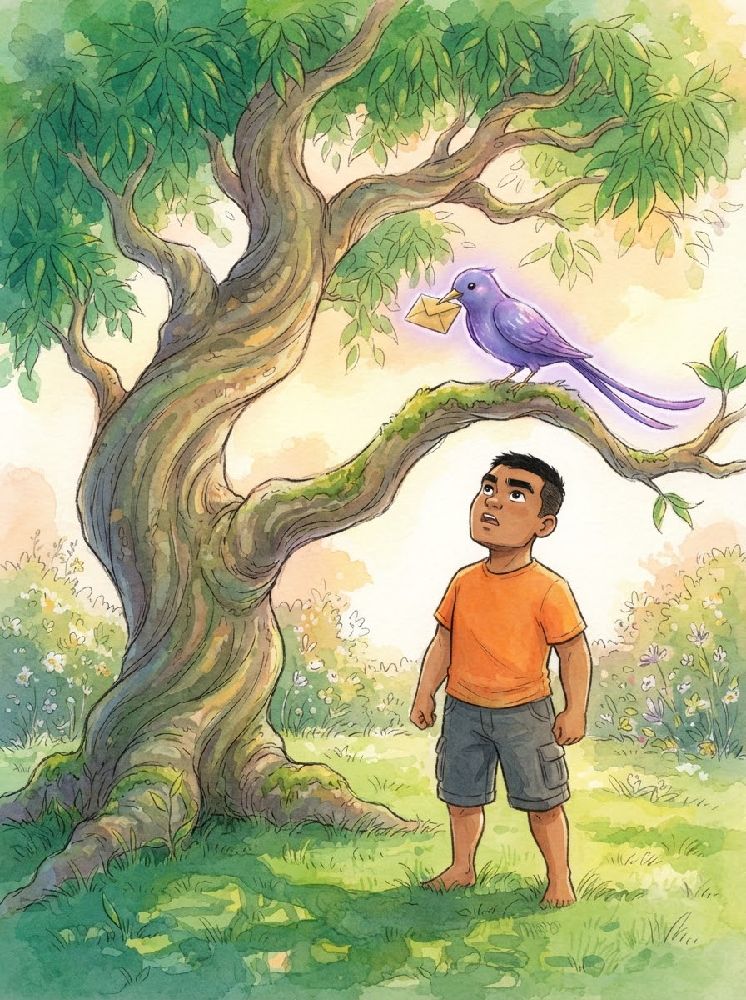
Ang Pagsubok ng Makulay na Ibon. Habang masayang nagpapahinga sina Angel, Yuna, Miel, at Matt sa ilalim ng kanilang paboritong puno ng mangga, isang kakaibang ibon ang biglang lumitaw. Ang mga balahibo nito ay kumikinang sa kulay ng bahaghari, at sa tuka nito ay may dala itong isang maliit at gintong sobre. Lumipad ito pababa at dumapo sa isang sanga malapit kay Miel.
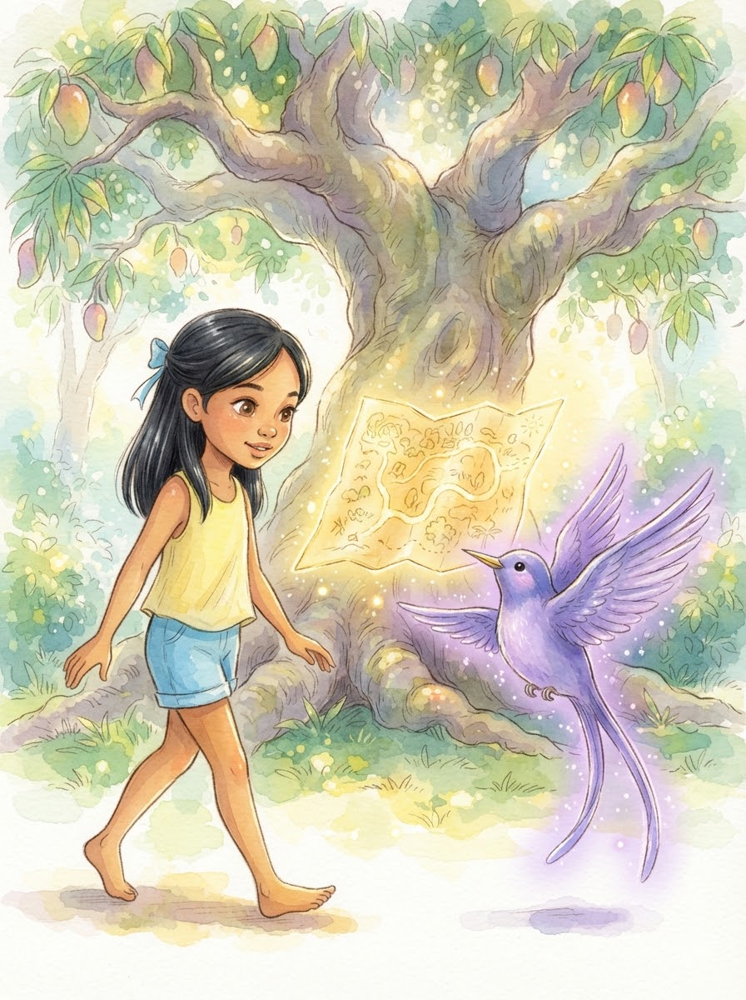
"Magandang araw sa inyong apat!" huni ng makulay na ibon. Binuksan nito ang sobre at ipinakita ang isang mapa na tila gawa sa liwanag. Sabi ng ibon, "Inaanyayahan ko kayo sa 'Hardin ng Walang Hanggang Saya.' Doon, ang lahat ng inyong hiling ay matutupad nang walang kahirap-hirap." Lumapit si Yuna, tila nabibighani sa ganda ng ibon at sa pangako nito.
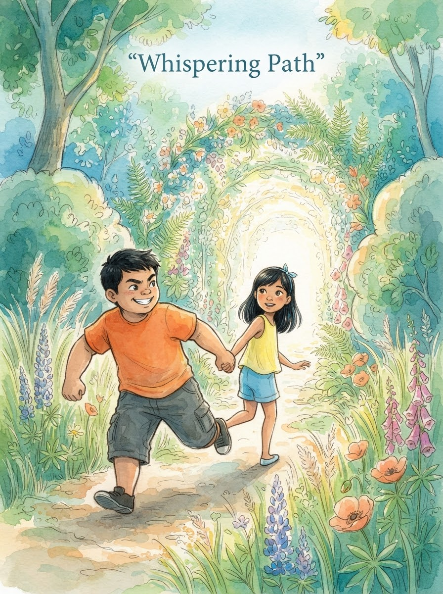
"Isang lugar na puro laro at matatamis na pagkain?" bulalas ni Miel sa tuwa. Hindi na siya nag-isip pa at agad na tumayo. "Tara na, baka maunahan pa tayo ng iba! Siguradong ito na ang pinakamagandang pakikipagsapalaran natin," yaya niya kay Yuna habang mabilis silang naglalakad patungo sa bukana ng mahiwagang landas.
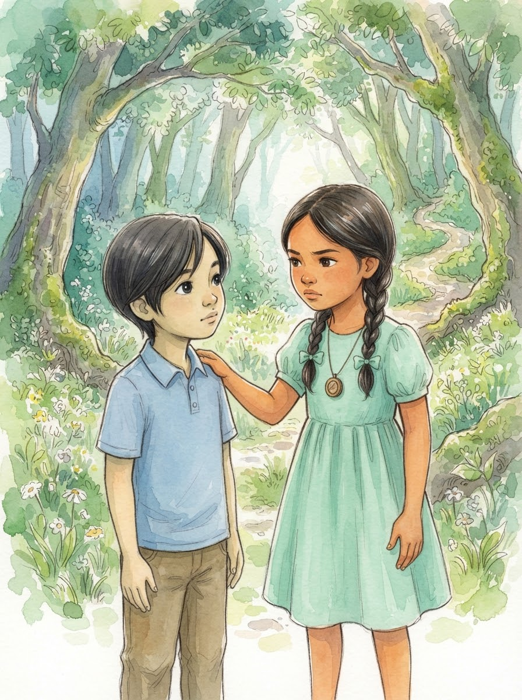
Ngunit huminto si Angel at hinawakan ang balikat ni Matt upang pigilan ito. "Teka muna, Matt," bulong ni Angel. "Naalala mo ba ang itinuro sa atin ni Mulat? Hindi lahat ng mukhang maganda at madali ay totoo. Masyadong mabilis ang alok ng ibon na iyon." Si Matt ay napa-isip at tumango bilang pagsang-ayon sa babala ni Angel.
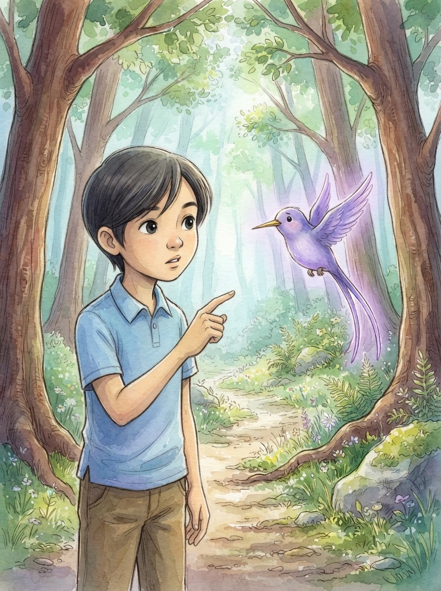
Nilapitan ni Matt ang ibon na nakasunod pa rin sa kanila. "Magandang ibon, bakit mo kami binibigyan ng ganitong pagkakataon? At bakit ngayon ka lang lumitaw sa aming landas?" tanong ni Matt. Ang ibon ay tila nabigla sa tanong at mabilis na sumagot nang pabulong, "Huwag na kayong maraming tanong, basta sumunod na lang kayo para lumigaya!"
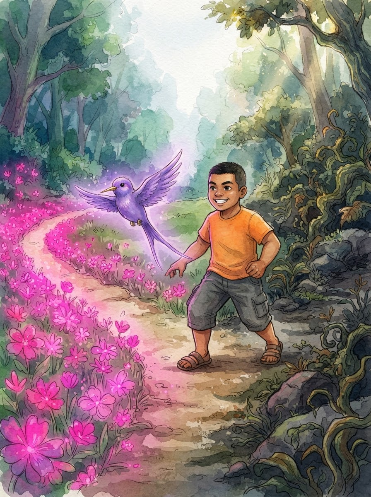
Narating ng magkakaibigan ang isang sangandaan sa loob ng kagubatan. Itinuro ng ibon ang isang daan na punong-puno ng makukulay na bulaklak at may amoy ng matatamis na kendi. "Dito ang madaling daan," wika ng ibon kay Miel. "Dito ay walang bato at walang tinik, puro sarap lang ang inyong mararanasan."
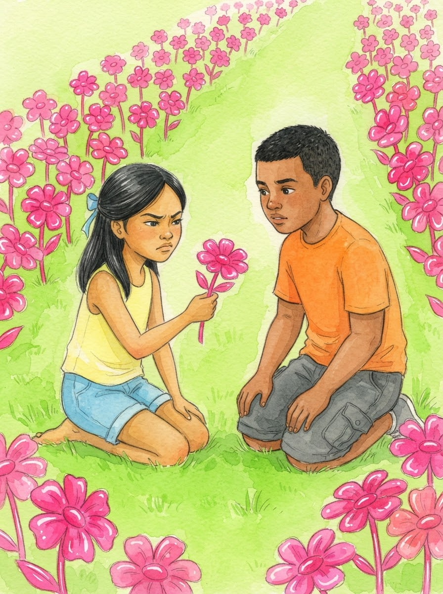
Habang naglalakad, may napansin si Yuna sa mga bulaklak sa paligid. Yumuko siya at hinawakan ang isa sa mga ito, ngunit agad siyang napakunot-noo. "Miel, tignan mo. Ang mga bulaklak na ito ay walang bango at tila gawa lang sa plastik," sabi ni Yuna habang ipinapakita ang matigas na talulot sa kanyang kaibigan. Nagsimulang magduda ang dalawa sa kanilang nakikita.
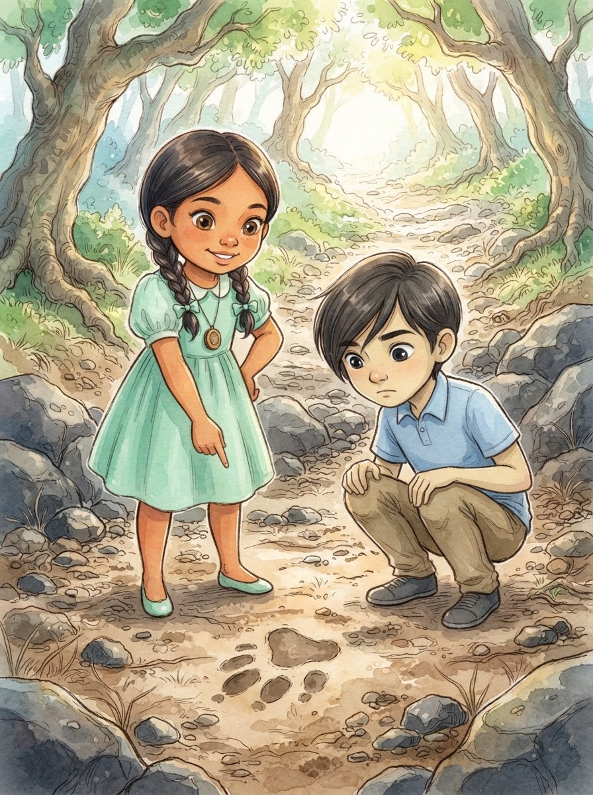
Sa kabilang dako ng sangandaan, sinuri nina Angel at Matt ang isa pang daan na mabatuhan at tila madilim. Sa gitna ng alikabok, nakita ni Angel ang isang pamilyar na marka sa lupa—isang bakas ng paa ng lobo. "Ito ang totoong daan," sabi ni Angel nang may tiwala. "Ang katotohanan ay madalas na nangangailangan ng pagsisikap at hindi matatagpuan sa pinakamadaling paraan."
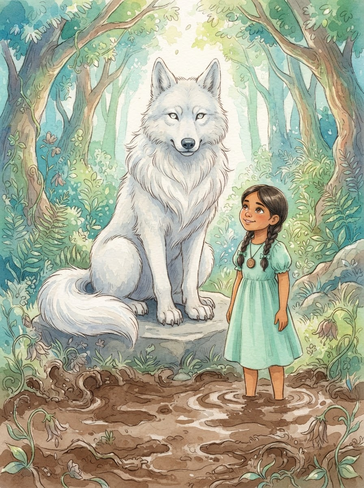
Nang magpasya silang talikuran ang mabulaklak na daan, ang lahat ng kulay nito ay biglang naglaho at naging isang malalim na putikan. Ang makulay na ibon ay biglang naging isang maliit na usok at naglaho. Sa dulo ng mabatuhang daan, lumitaw si Mulat ang lobo. "Mahusay, Angel," puri ni Mulat. "Ang pagtatanong bago maniwala ay ang inyong pinakamabisang sandata laban sa panlilinlang."
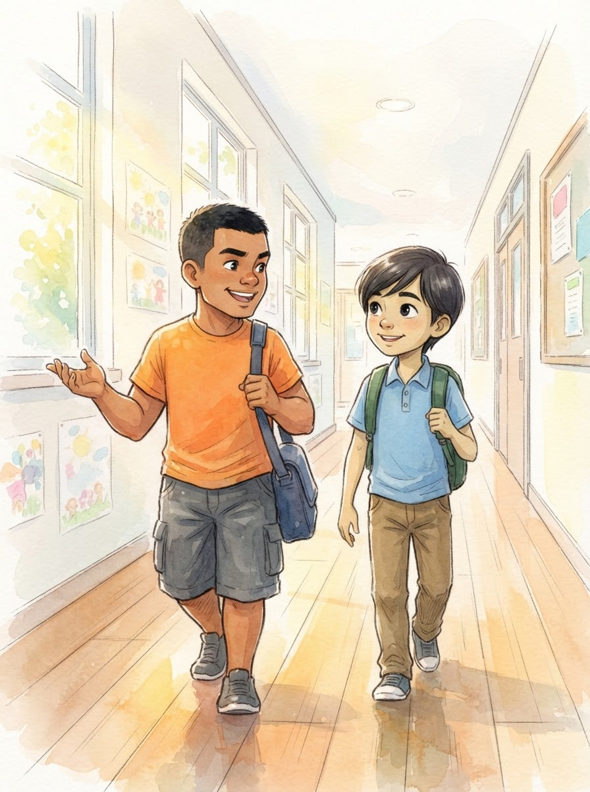
Baon ang aral na ito, masayang naglakad pabalik ang magkakaibigan. Kinabukasan, pumasok sina Miel at Matt sa paaralan na may dalang sigla. Sabik silang ibahagi sa kanilang mga kaklase ang nangyari sa kanila sa kagubatan at ang mahalagang mensahe ni Mulat tungkol sa pagiging mapanuri.
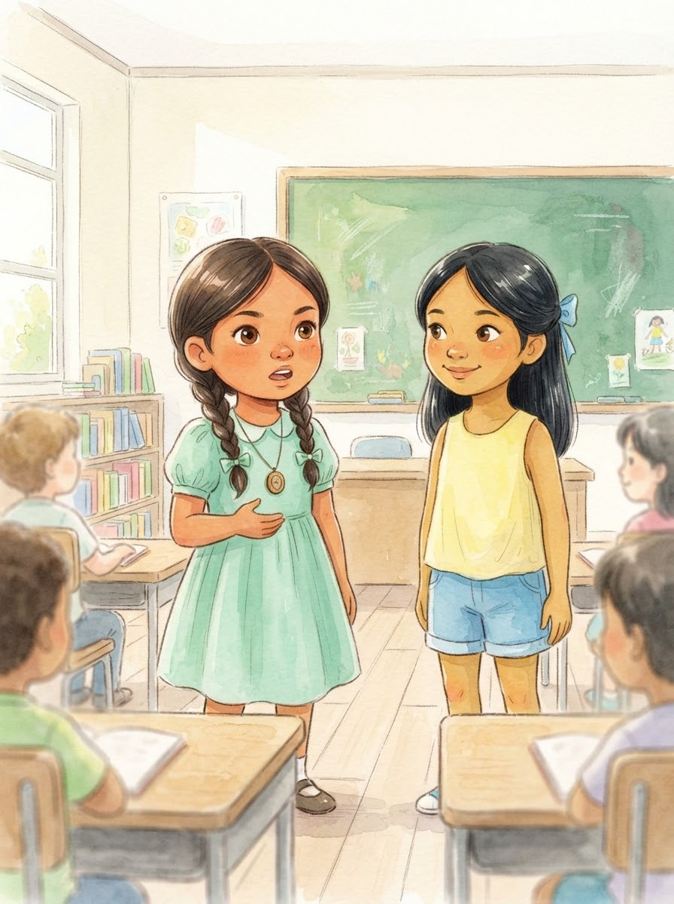
Sa loob ng silid-aralan, tumayo sa harap sina Angel at Yuna. Ikinuwento nila ang tungkol sa makulay na ibon at ang mabulaklak ngunit pekeng daan. "Natutunan po namin na kailangang magtanong, magsiyasat, at mag-isip bago maniwala sa anumang naririnig o nakikita," paliwanag ni Angel sa kanyang mga kamag-aral.
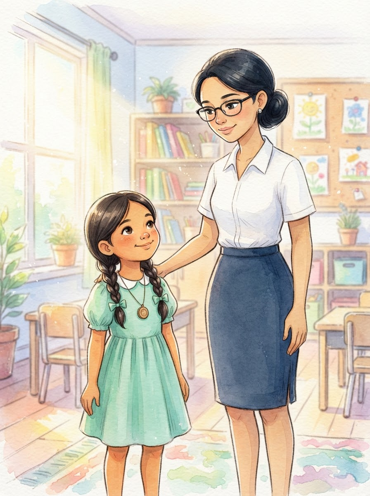
Matapos ang kanilang pagbabahagi, tumayo ang kanilang guro na si Ma'am Maricris Latosa. Pumalakpak siya nang bahagya at lumapit kay Angel. "Napakahusay ninyo," puri ni Ma'am Maricris. "Ipinamalas ninyo ang pagiging mapanuri at matalinong mga bata. Iyan ang katangiang dapat tularan ng lahat."